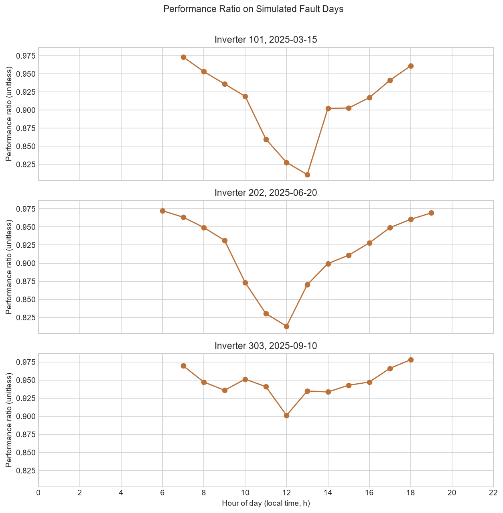

Fleet overview
Flagged 3-hour blocks
1
Flagged inverter share
0.12% (1/830)
Fault detection rate
33.33% (1/3)
Pooled mean hourly PR
0.9292531056819616
Fleet status by severity
Saved rolling blocks by tier; each tier is labeled as well as color-coded.
Watch blocks
1
100.00% of saved blocks
Alert blocks
0
0.00% of saved blocks
Critical blocks
0
0.00% of saved blocks
When and where
The saved SQL result contains per-inverter aggregates; dates and times are matched from detected validation windows.
| Inverter | Date and time | Mean PR gap | Tier |
|---|---|---|---|
| 202 | 2025-06-20 10:00 to 12:00 | 0.06219851694865586 | Watch |
Overlapping rolling blocks count separately.
Inverter ranking
Lowest mean PR first, using the saved top-ten ranking.
| Rank | Inverter | Mean PR | Maximum tier | Absolute flagged hours | Baseline-relative flagged hours |
|---|---|---|---|---|---|
| 1 | 202 | 0.9292126805 | Normal | 2867 | 2 |
| 2 | 303 | 0.9292441589 | Normal | 2867 | 0 |
| 3 | 101 | 0.9292457259 | Normal | 2867 | 0 |
| 4 | 45 | 0.9292531743 | Normal | 2867 | 0 |
| 4 | 46 | 0.9292531743 | Normal | 2867 | 0 |
| 4 | 47 | 0.9292531743 | Normal | 2867 | 0 |
| 4 | 48 | 0.9292531743 | Normal | 2867 | 0 |
| 4 | 49 | 0.9292531743 | Normal | 2867 | 0 |
| 4 | 50 | 0.9292531743 | Normal | 2867 | 0 |
| 4 | 51 | 0.9292531743 | Normal | 2867 | 0 |
Investigation: validation fault days
Hourly PR series for validation inverters 101, 202, and 303.

| Inverter | Date and hour | Performance ratio |
|---|---|---|
| 101 | 2025-03-15 00:00:00 | No daytime reading |
| 101 | 2025-03-15 01:00:00 | No daytime reading |
| 101 | 2025-03-15 02:00:00 | No daytime reading |
| 101 | 2025-03-15 03:00:00 | No daytime reading |
| 101 | 2025-03-15 04:00:00 | No daytime reading |
| 101 | 2025-03-15 05:00:00 | No daytime reading |
| 101 | 2025-03-15 06:00:00 | No daytime reading |
| 101 | 2025-03-15 07:00:00 | 0.9732886947892258 |
| 101 | 2025-03-15 08:00:00 | 0.9530854600503744 |
| 101 | 2025-03-15 09:00:00 | 0.9360644132041356 |
| 101 | 2025-03-15 10:00:00 | 0.9188725344329848 |
| 101 | 2025-03-15 11:00:00 | 0.859790773105645 |
| 101 | 2025-03-15 12:00:00 | 0.8276139888700876 |
| 101 | 2025-03-15 13:00:00 | 0.8108109428217102 |
| 101 | 2025-03-15 14:00:00 | 0.9023166163779164 |
| 101 | 2025-03-15 15:00:00 | 0.902797860429326 |
| 101 | 2025-03-15 16:00:00 | 0.9170498831441108 |
| 101 | 2025-03-15 17:00:00 | 0.9411407830567052 |
| 101 | 2025-03-15 18:00:00 | 0.9608838532859098 |
| 101 | 2025-03-15 19:00:00 | No daytime reading |
| 101 | 2025-03-15 20:00:00 | No daytime reading |
| 101 | 2025-03-15 21:00:00 | No daytime reading |
| 101 | 2025-03-15 22:00:00 | No daytime reading |
| 101 | 2025-03-15 23:00:00 | No daytime reading |
| 202 | 2025-06-20 00:00:00 | No daytime reading |
| 202 | 2025-06-20 01:00:00 | No daytime reading |
| 202 | 2025-06-20 02:00:00 | No daytime reading |
| 202 | 2025-06-20 03:00:00 | No daytime reading |
| 202 | 2025-06-20 04:00:00 | No daytime reading |
| 202 | 2025-06-20 05:00:00 | No daytime reading |
| 202 | 2025-06-20 06:00:00 | 0.972408998146254 |
| 202 | 2025-06-20 07:00:00 | 0.96350640605741 |
| 202 | 2025-06-20 08:00:00 | 0.9492048661234036 |
| 202 | 2025-06-20 09:00:00 | 0.931423355662667 |
| 202 | 2025-06-20 10:00:00 | 0.8731603227771801 |
| 202 | 2025-06-20 11:00:00 | 0.830257723267358 |
| 202 | 2025-06-20 12:00:00 | 0.8129168380595153 |
| 202 | 2025-06-20 13:00:00 | 0.8701979164564448 |
| 202 | 2025-06-20 14:00:00 | 0.89940514348886 |
| 202 | 2025-06-20 15:00:00 | 0.9109037123534895 |
| 202 | 2025-06-20 16:00:00 | 0.9279239936732486 |
| 202 | 2025-06-20 17:00:00 | 0.9490636897844978 |
| 202 | 2025-06-20 18:00:00 | 0.9605209805676244 |
| 202 | 2025-06-20 19:00:00 | 0.9694077850921764 |
| 202 | 2025-06-20 20:00:00 | No daytime reading |
| 202 | 2025-06-20 21:00:00 | No daytime reading |
| 202 | 2025-06-20 22:00:00 | No daytime reading |
| 202 | 2025-06-20 23:00:00 | No daytime reading |
| 303 | 2025-09-10 00:00:00 | No daytime reading |
| 303 | 2025-09-10 01:00:00 | No daytime reading |
| 303 | 2025-09-10 02:00:00 | No daytime reading |
| 303 | 2025-09-10 03:00:00 | No daytime reading |
| 303 | 2025-09-10 04:00:00 | No daytime reading |
| 303 | 2025-09-10 05:00:00 | No daytime reading |
| 303 | 2025-09-10 06:00:00 | No daytime reading |
| 303 | 2025-09-10 07:00:00 | 0.9696513691694676 |
| 303 | 2025-09-10 08:00:00 | 0.9473151007916736 |
| 303 | 2025-09-10 09:00:00 | 0.9358883974405996 |
| 303 | 2025-09-10 10:00:00 | 0.9512628831391144 |
| 303 | 2025-09-10 11:00:00 | 0.940888148926347 |
| 303 | 2025-09-10 12:00:00 | 0.9012312280317276 |
| 303 | 2025-09-10 13:00:00 | 0.9348895448305622 |
| 303 | 2025-09-10 14:00:00 | 0.9335656658687448 |
| 303 | 2025-09-10 15:00:00 | 0.9428419563150336 |
| 303 | 2025-09-10 16:00:00 | 0.9472888473383114 |
| 303 | 2025-09-10 17:00:00 | 0.9662263066721264 |
| 303 | 2025-09-10 18:00:00 | 0.9780653010878952 |
| 303 | 2025-09-10 19:00:00 | No daytime reading |
| 303 | 2025-09-10 20:00:00 | No daytime reading |
| 303 | 2025-09-10 21:00:00 | No daytime reading |
| 303 | 2025-09-10 22:00:00 | No daytime reading |
| 303 | 2025-09-10 23:00:00 | No daytime reading |
Detection check
Detected status is written as Yes or No for each planted validation window.
| Inverter | Injected test window | Mean PR gap | Detected | Tier |
|---|---|---|---|---|
| 101 | 2025-03-15 10:00:00 to 2025-03-15 12:00:00 | 0.011440677563453497 | No | Below Watch |
| 202 | 2025-06-20 10:00:00 to 2025-06-20 12:00:00 | 0.06219851694865586 | Yes | Watch |
| 303 | 2025-09-10 10:00:00 to 2025-09-10 12:00:00 | 0.013847592642688311 | No | Below Watch |
What to do
| Tier | Suggested O&M action |
|---|---|
| Watch | Remote checking only; log and monitor for the next 24 hours. |
| Alert | Attempt a remote reset and schedule a site visit within 72 hours. |
| Critical | Likely a hardware fault that requires immediate dispatch. |
Limits and documentation
These are demonstration results, not live plant telemetry or fault diagnoses. The validation faults are simulated, the weather inputs are modeled, and the detector thresholds are demonstration settings.